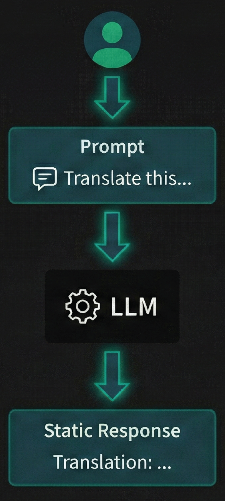
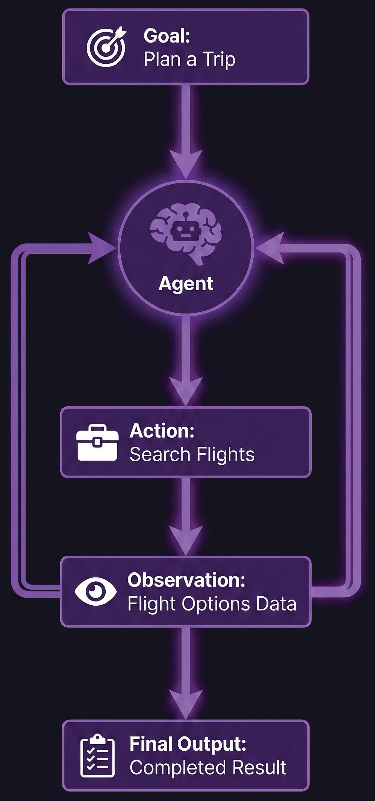
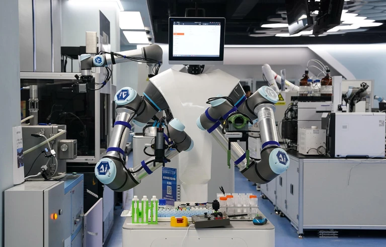

AI agents already automate literature review, design and synthesis, and data analysis across scientific disciplines.

"Prefrontal theta power is suppressed during failed encoding trials in the loaded EEG data, and hippocampal BOLD is concurrently reduced in the fMRI runs. After retrieving Buzsáki & Moser (2013) on theta oscillations and episodic memory via the literature tool, I hypothesize that disrupted prefrontal–hippocampal theta synchrony is the mechanistic driver of the observed encoding deficit — falsifiable by phase-amplitude coupling analysis of the concurrent LFP recordings."